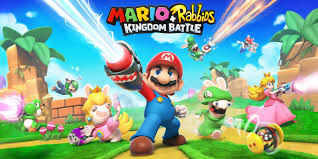
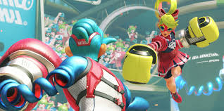
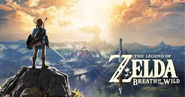
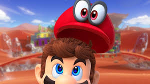

let's look at the top 10 Nintendo games of 2017.
Number 10
Mario + Rabbids Kingdom Battle
Despite the glaring issue of the Rabbids, "Mario + Rabbids Kingdom Battle" is a surprisingly fun and enjoyable game. The game is
a tactical, turn-based role-playing game; much like Xcom. However, unlike Xcom, you play as an assortment of
Mario and Rabbids related characters to fight the antagonists of said franchises. A strange combination, but it works
Number 9

Pokémon Ultra Sun & Ultra Moon
Pokémon Ultra Sun & Ultra Moon focus on your fearless child protagonist as you adventure through the magical
world of Pokémon. Along the way, you fight team skull and the ultra beasts, on your journey to become a Pokémon Master.
Number 8
Number 2
The Legend of Zelda: Breath of the Wild
Number 1
